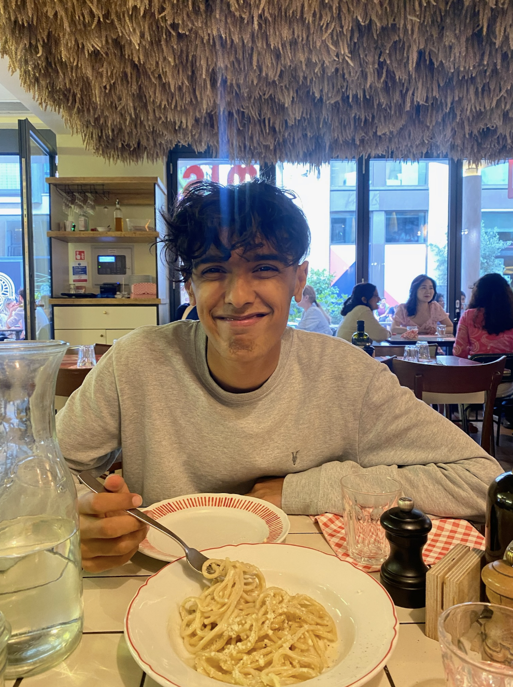
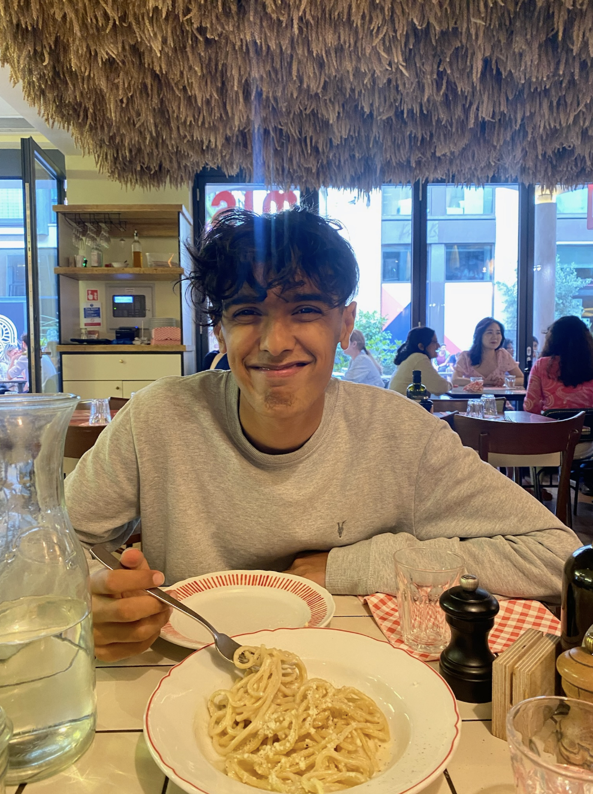

Ah, the summer before uni, such a hyped thing. Also I’m going to start from before summer actually started. So this was when you were into the A-level prepped and I am an idiot and I kept asking to meet you and definitely kinda had an effect on you. Anyways, yeah free houses, we’d meet a lot like that, Niraj uncle’s party was here sometime I don't see why that’s relevant but it is in my head. So yeah my mumma and I would come pick you up from school a couple of times, unfortunately got caught by your mum’s stupid snitch of a colleague. Had a bunch of fun and then you finished exams!! So here’s the real summer before uni. Of course, there was A LOT of anxiousness (mainly from my side) . I knew we had to break up, I did not have any idea until the very end where I’d go for uni, there was a lot going on. I think in part my inability to just relax ruined it all a bit. I was so needy at all times, crying when you were going on holiday, just causing a fuss. Ok, wait lemme speak properly, god I’m making you a whole website and even then I’m doing all these nakhre, god when will I ever stop. Ok this was THE summer before uni, the one where you do all the crazy things and have sex and make memories that'll last a lifetime and bal bla bla. I actually think we did do a bunch of that to be honest. We had a pool party, prom(eeeeeek) you went on holiday, I went on holiday(I know it wasnt together, but I’m glad we enjoyed our own separate lives as well) You surprised me after the holidays, we spent everyday together after that. Nimai, I love you. As I was saying, we had this whole bucket list and to be honest we completed a good amount, but I’ll be honest and say that I know I ruined a lot of it. There was so much worry on my mind, I was so scared about breaking up, I just never wanted to let go. I was trying to hold on far too tight. I also think you saw this, you saw what was going on and you were so worried that I was trying to do all these things only because I was scared I’d lose the moment. I love you Nimai. See I don’t want to say a lot here, because I want each individual event to be spoken about in the scrapbook. So yeah in general we tried, we went out as much sa we could even though I fell insanely sick afterwards. I think this is the first time I’m properly looking back on it as a whole, and wow, I was not ok. I was so absolutely terrified of losing you from my life I let it consume me. The idea of not having you in my life as I do right now terrified me (I mean as it should). This is becoming a loop, I think im doing an oopsy. Ok basically I was so so scared of losing you, and all you’d do (I’m not complaining don’t worry) was be a big practical smart boy and say all the big boy things that I did not want to hear. All I wanted to hear was that it was all going to be ok and that you’d one day marry me and we’d have that family we had dreamt of. Ha during this time we got caught doing the sloppy doppy as well, the sad part is I hadn’t even officially given you head from which you came yet so that's a bit sad. I did not have sex(but I did let that thought completely take over my head as well). Basically this time was genuinely really fun, we did do a lot of fun things together as a couple for the first time and just in general as well. I of course fell so much more in love with you every day because I saw that you were a really amazing person. I know I said this a lot during the time, but it takes a lot of heart to let go. To let go of someone you love so much(unless you never loved me adn you’re just with me for the sex and popularity) even if letting hurts you, doing that so the other person can follow their dreams. Kya bhooth chada tha ki this is my dream, but no honestly, you have ALWAYS pushed me to do my best and I love you so so so much for that. You have, forget making me feel guilty, made me feel like I’d be doing the wrong thing if I gave you a second of attention rather than work. Thank you for always being my biggest supporter(after mumma of course). But the truth is that I did ruin it a bit, my thoughts just got the better of me and I just hated myself for making that decision. I was so scared of what was going to happen, I Iet it take over me sometimes. I’m sorry for that, but we’ve got this summer and forever more to go to make up for it. Honestly I don’t think it needs to be made up for, I think in itself it has its own beauty. It represents us almost. Anyways, a lot of fun dates, little home meets, lots of tears and lots of serious conversations later, the day had come - 26th July 2023- the day that I(we) had been dreading for so long. The day where we had to finally say see you soon to each other, I CAN'T EVEN WRITE IT OUT WITHOUT IT HURTING MY HEART. I CRIED. I CRIED MY SOUL OUT. Because it did feel like I was leaving my heart and soul behind. It hurt so much. Like a pain I've never felt before. It hurt so much to know that maybe it’d never be the same again. I held on to you so tight hoping and wishing and praying that maybe if I held tight enough time would stop and something would change and it’d all be okay and I wouldn't have to leave you. I saw you cry for the first time. YAYYYY. You said “dekh, mujhe bhi rula diya” and had the most beautiful singular tear fall down. I just wished at that moment that I had never chosen this. That I had just stuck to the normal thing. But noooo Manasi likes pain. So I hugged you with all my heart, and I held onto you as tight as I could, and even though I wished for it, I didn’t get to stay with you, I did actually have to leave and reach the Uni and making big boy decisions phase.